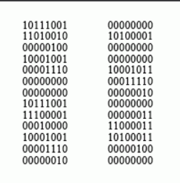
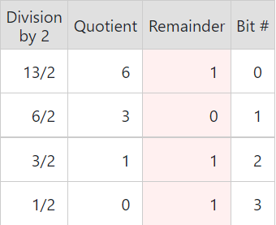
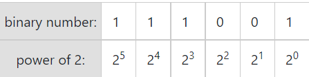

Unit 1 - Introduction to Programming

What does programming mean?
It is the process of creating computer programs
What is a computer program?
It is a sequence of instructions to the computer, telling it what to do
How does one create a computer program?
In order to create a computer program, a programming language is used in order to give the instructions to the computer in a language it can understand.
There are several types of programming languages. For now, we will separate them into 2 main types:
- Low-level languages
- High-level languages
A high-level language is closer to the human way of communication, while a low-level language is more similar to what the computer can understand
3 more questions arise:
- What is source code?
- How does my source code get transformed to machine language?
- What is machine language and how does the computer execute it?
What does source code look like?
And how does that get transformed into machine language?
It has to undergo the processes of preprocessing, compilation and linking
Compilation is the process of transforming a program written in a high-level programming language (its source code) into object code
Object code is the product of compilation. Multiple object files are linked by a program called the linker into an .exe file (on windows OS) or a library file, that can be reused by an executable
...You also mentioned machine code?
Machine code consists of machine language instructions. It is used to directly "speak" to a computer's CPU
And here is example machine code for adding the numbers 1234 and 4321
Image taken from The Scientist and Engineer's Guide to Digital Signal Processing, By Steven W. Smith
Machine code, as everything a computer is able to read is in the binary numeral system
A numeral system is just a way of writing numbers with symbols
We commonly use the decimal numeral system, which consists of the digits 0-9
Binary numbers consist of only 2 digits (0 and 1), hence the name
Converting decimal to binary
- Divide the number by 2
- Get the integer quotient for the next iteration
- Use the remainder as a binary digit
- Repeat the steps until the quotient is 0
Converting the decimal number 13 to binary:
Converting binary to decimal
For binary number with n digits: dn-1...d2d1d0
The decimal number is equal to the sum of binary digits times their power of 2 (2n):
Converting the binary number 111001 to decimal
111001(2) = 1⋅25+1⋅24+1⋅23+0⋅22+0⋅21+1⋅20 = 57(10)
That was it :)